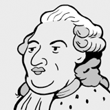
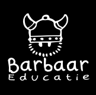

Nieuws

Brief aan Lodewijk XVI
We hebben een schrijfopdracht toegevoegd waarin de leerlingen een brief schrijven aan koning Lodewijk XVI Klik hier voor meer informatie
Rollenspel Griekse bestuursvormen
We hebben een rollenspel over de Griekse bestuursvormen toegevoegd aan ons lesmateriaal. Klik hier voor meer informatieMillo
Millo, de interactieve historische atlas voor het digibord, is klaar voor gebruik! Millo is te vinden onder "lesmateriaal". Klik hier voor meer informatie
Opdracht middeleeuwse stad
We hebben een groepsopdracht over de middeleeuwse stad toegevoegd. Deze opdracht is geschikt voor het basisonderwijs en de eerste klas van het voortgezet onderwijs Klik hier voor meer informatie